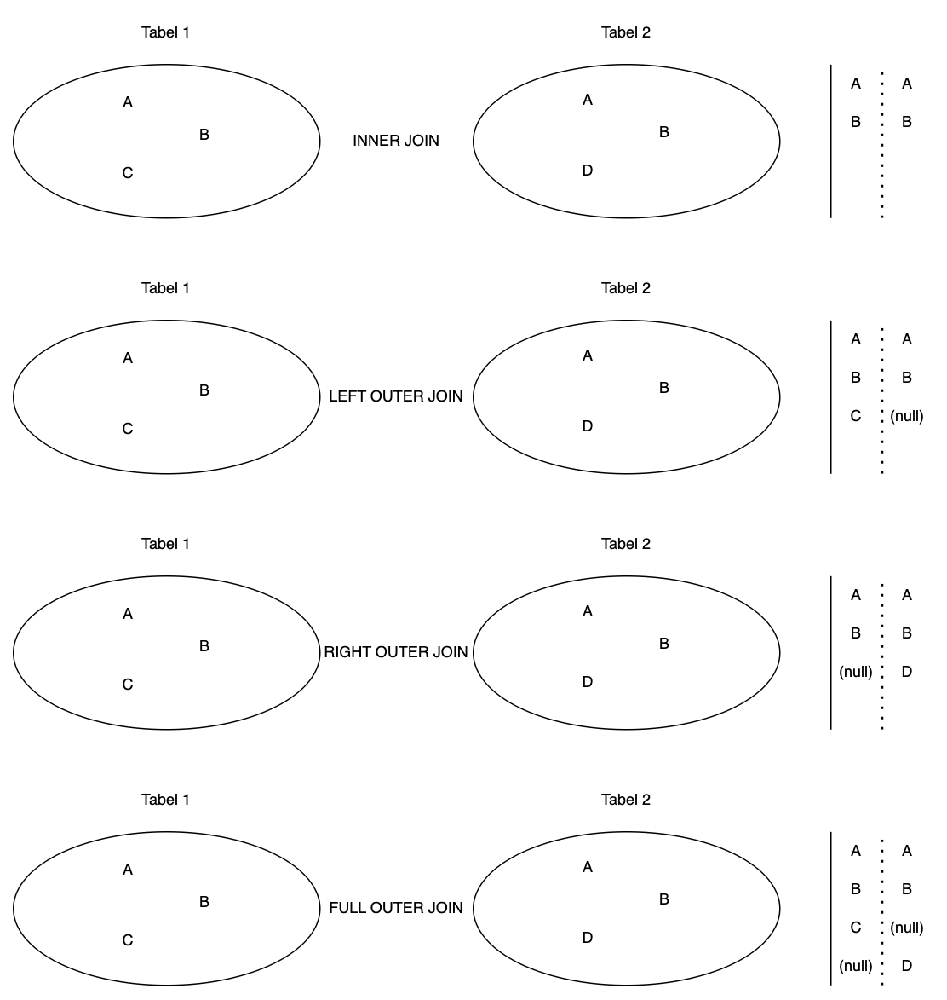

Werken Met MySQL
Relationele Databanken
De structuur van een Relationele Databank wordt in essentie geschapen uit Tables (tabellen) en Constraints (opgelegde beperkingen) op de data in die tabellen.
Tables
Een Table is een structuur bestaande uit rijen en kolommen, gevuld met gegevens.
Elke Table heeft minstens:
-
Een naam, bijvoorbeeld "Klanten", "Producten" of "Spelers"
-
één of meer kolomdefinities
Elke Column wordt gedefinieerd a.d.h.v. onderstaande eigenschappen.
- Name
-
De hoofding van de kolom, bijvoorbeeld "Voornaam" of "Geboortedatum".
- DataType
-
Technische precisering van het type data dat opgeslagen zal worden in de kolom.
-
varchar(<lengte>) -
int -
decimal(<positiesInTotaal>,<cijfersAchterDeKomma>) -
timestamp -
…
-
- Nullability
-
-
null→ een rij mag een waarde hebben voor deze kolom -
not null→ een rij moet altijd een waarde hebben voor deze kolom
-
- Default Value
-
Wanneer men bij het aanmaken van een rij deze kolom niet vermeldt, wordt een standaardwaarde toegepast, bijvoorbeeld het resultaat van de functie
current_timestampof de vaste waarde3.
Constraints
- Primary Key (Constraint)
-
De waarde van een veld in deze kolom, of combinatie van kolommen, moet uniek zijn in de tabel. Er kan maar één PK bestaan per tabel. Dit is dé sleutel bedoeld om een record (=rij) binnen de tabel ondubbelzinnig te identificeren.
- Unique Key (Constraint)
-
De waarde van een veld in deze kolom, of combinatie van kolommen, moet uniek zijn in de tabel. Er kan meer dan één UK bestaan per tabel. Deze zijn bedoeld om business regels rond uniciteit af te dwingen.
- Foreign Key (Constraint)
-
De waarde van een veld in een bepaalde kolom in tabel A verwijst naar een Key (Primary of Unique) in tabel B. Indien de gerefereerde waarde in tabel B niet bestaat, zal de database het record in tabel A verwerpen.
- Check Constraint
-
Een deterministische boolean expressie die gebruik kan maken van alle kolommen in de tabel en constanten om een record te evalueren. Indien de expressie naar
falseevalueert, zal het record niet kunnen toegevoegd of aangepast worden.
Structured Query Language (SQL)
Structured Query Language (SQL) is de taal die we gebruiken om een databank vorm te geven en de data te manipuleren.
SQL is geen programmeertaal. In een programmeertaal beschrijf je immers hoe je iets wil doen. In SQL beschrijf je enkel wat je wil doen - het systeem bepaalt hoe dat zal gebeuren.
MySQL Opzetten
Database opstarten als Docker Image
Download en installeer Docker Desktop voor jouw besturingssysteem.
Download de MySQL 8.0 Docker image
docker pull mysql:8.0Start de image als container.
docker run --name pg2-mysql-db -p 3307:3306 -e MYSQL_ROOT_PASSWORD=WachtW00rd -d mysql:8.0-
gevorderd2-mysqlis de naam van de nieuwe container instance -
3306is de poort binnen de instance,3307buiten -
MYSQL_ROOT_PASSWORDis een environment variable -
mysql:8.0is de image die in de instance gebruikt wordt
De container logs laten weten wanneer de server klaar is om gebruikt te worden.
/usr/sbin/mysqld: ready for connections...Verbinden met MySQL Workbench
Download en installeer MySQL Workbench.
Start MySQL Workbench en voeg een nieuwe connectie toe.
Gebruik de poort en het wachtwoord dat je ingesteld hebt bij het runnen van de container.
Select de nieuwe connectie op het startscherm.
Verbind en voer een test query uit.
Nieuwe User Maken
We hebben de connectiviteit getest met de root account. Het is niet de bedoeling de root account te gebruiken als developer of applicatie. Het is ook niet wenselijk onze tabellen te maken in het sys schema.
Maak een nieuw schema. Kies een passende naam.
Maak een nieuwe user. Kies een passende naam. Vergeet het wachtwoord niet. Klik nog niet op "Apply".
Ken de nieuwe gebruiker alle rechten, behalve GRANT OPTION, toe op het nieuwe schema. Klik op "Apply".
Sluit de root sessie.
Voeg een nieuwe connectie toe. Gebruik deze keer de nieuwe user (en schema).
Verbind met de nieuwe, beperkte, connectie. Probeer het sys schema te droppen om te valideren dat de rechten van deze user wel degelijk beperkt zijn.
DDL (Data Definition Language)
Hieronder een voorbeeld tabel ParentTable.
create table ParentTable (
Id int auto_increment primary key,
BusinessKey char(16) not null,
ParentName varchar(60) not null,
CreatedOnUtc timestamp default current_timestamp,
CounterField int not null default 3
);
alter table ParentTable
add constraint UK_ParentTable_BusinessKey
unique (BusinessKey);
alter table ParentTable
add constraint CK_ParentTable_CounterField_Min3
check (CounterField >= 3);Hieronder een voorbeeld tabel ChildTable.
create table ChildTable (
Id int auto_increment primary key,
BusinessKey char(16) not null,
ParentId int not null,
ChildName varchar(60) not null,
CreatedOnUtc timestamp default current_timestamp
);
alter table ChildTable
add constraint UK_ChildTable_BusinessKey
unique (BusinessKey);
alter table ChildTable
add constraint FK_ChildTable_ParentTable_ParentId
foreign key (ParentId)
references ParentTable(Id);| Niet elke RDBMS voorziet impliciet indexen op foreign keys. Meestal wil je elke foreign key indexeren en dus zelf expliciet de relevante indexen voorzien indien ze niet vanzelf aangemaakt worden. |
Het zou handig zijn onze database te kunnen visualiseren.
ERD (Entity Relationship Diagram)
Een ERD geeft de structuur van een relationele databank weer. Dergelijke diagrammen zijn zeer handig als onderdeel van een technische analyse of documentatie.
Het opstellen van een ERD begint meestal op papier of een whiteboard. Itereren op, en formaliseren van, het ontwerp gebeurt in applicaties zoals MySQL Workbench, Visual Paradigm, Oracle SQL Developer Data Modeler etc.
Op papier werken heeft zijn voordelen, zeker in het begin, maar bovenstaande tools bieden krachtige mogelijkheden zoals
-
SQL script genereren uit een diagram,
-
Diagram genereren op basis van een bestaande databank
-
…
Databank naar ERD
Open MySQL Workbench. Navigeer in de menubalk naar Database → Reverse Engineer.
Selecteer de connectie die we eerder maakten.
Volg de wizard verder. Selecteer het juiste schema.
Kies de relevante objecten om te importeren en laat ze op het diagram plaatsen.
Je kan nu het ERD bekijken en manipuleren naar wens.
Je kan het design opslaan. Dit verandert niets aan de database waaruit het diagram gegenereerd werd.
Je kan het design ook exporteren als afbeelding. File → Export → PNG.
Ja kan het design ook exporteren als SQL script. File → Export → SQL.
Het resultaat is technisch zeer accuraat, maar minder leesbaar dan het script dat we zelf schreven.
-- MySQL Script generated by MySQL Workbench
-- Mon Oct 21 19:33:21 2024
-- Model: New Model Version: 1.0
-- MySQL Workbench Forward Engineering
SET @OLD_UNIQUE_CHECKS=@@UNIQUE_CHECKS, UNIQUE_CHECKS=0;
SET @OLD_FOREIGN_KEY_CHECKS=@@FOREIGN_KEY_CHECKS, FOREIGN_KEY_CHECKS=0;
SET @OLD_SQL_MODE=@@SQL_MODE, SQL_MODE='ONLY_FULL_GROUP_BY,STRICT_TRANS_TABLES,NO_ZERO_IN_DATE,NO_ZERO_DATE,ERROR_FOR_DIVISION_BY_ZERO,NO_ENGINE_SUBSTITUTION';
-- -----------------------------------------------------
-- Schema mydb
-- -----------------------------------------------------
-- -----------------------------------------------------
-- Schema gevorderdavond
-- -----------------------------------------------------
-- -----------------------------------------------------
-- Schema gevorderdavond
-- -----------------------------------------------------
CREATE SCHEMA IF NOT EXISTS `gevorderdavond` DEFAULT CHARACTER SET utf8mb4 COLLATE utf8mb4_0900_ai_ci ;
USE `gevorderdavond` ;
-- -----------------------------------------------------
-- Table `gevorderdavond`.`ParentTable`
-- -----------------------------------------------------
CREATE TABLE IF NOT EXISTS `gevorderdavond`.`ParentTable` (
`Id` INT NOT NULL AUTO_INCREMENT,
`BusinessKey` CHAR(16) NOT NULL,
`ParentName` VARCHAR(60) NOT NULL,
`CreatedOnUtc` TIMESTAMP NULL DEFAULT CURRENT_TIMESTAMP,
`CounterField` INT NOT NULL DEFAULT '3',
`TestCol` VARCHAR(45) NULL,
PRIMARY KEY (`Id`),
UNIQUE INDEX `UK_ParentTable_BusinessKey` (`BusinessKey` ASC) VISIBLE)
ENGINE = InnoDB
AUTO_INCREMENT = 3
DEFAULT CHARACTER SET = utf8mb4
COLLATE = utf8mb4_0900_ai_ci;
-- -----------------------------------------------------
-- Table `gevorderdavond`.`ChildTable`
-- -----------------------------------------------------
CREATE TABLE IF NOT EXISTS `gevorderdavond`.`ChildTable` (
`Id` INT NOT NULL AUTO_INCREMENT,
`BusinessKey` CHAR(16) NOT NULL,
`ParentId` INT NOT NULL,
`ChildName` VARCHAR(60) NOT NULL,
`CreatedOnUtc` TIMESTAMP NULL DEFAULT CURRENT_TIMESTAMP,
PRIMARY KEY (`Id`),
UNIQUE INDEX `UK_ChildTable_BusinessKey` (`BusinessKey` ASC) VISIBLE,
INDEX `FK_ChildTable_ParentTable_ParentId` (`ParentId` ASC) VISIBLE,
CONSTRAINT `FK_ChildTable_ParentTable_ParentId`
FOREIGN KEY (`ParentId`)
REFERENCES `gevorderdavond`.`ParentTable` (`Id`))
ENGINE = InnoDB
AUTO_INCREMENT = 4
DEFAULT CHARACTER SET = utf8mb4
COLLATE = utf8mb4_0900_ai_ci;
SET SQL_MODE=@OLD_SQL_MODE;
SET FOREIGN_KEY_CHECKS=@OLD_FOREIGN_KEY_CHECKS;
SET UNIQUE_CHECKS=@OLD_UNIQUE_CHECKS;DML (Data Manipulation Language)
CRUD
We herhalen tijdens de les de CRUD basics
insert into parentTable (
BusinessKey ,
ParentName ,
Counter
)
values (
'CODE123',
'Dit is de naam',
2
);
insert into childTable (
BusinessKey,
ParentId
)
values (
'CHILD123',
1
);select pt.Id, pt.BusinessKey ,ct.Id, ct.BusinessKey
from parentTable pt
inner join childTable ct on pt.Id = ct.parentId; (1)| 1 | Test het verschil tussen left, right en inner uit indien je twijfelt. |

update parentTable
set ParentName = 'Updated name'
where Id = 1;update parentTable pt
inner join childTable ct on pt.Id = ct.parentId
set pt.ParentName = 'Nogmaals Updated',
ct.BusinessKey = 'CHILD1234'
where ct.Id = 1;delete from parentTable
where id = 1;delete from childTable
where id = 1;
delete from parentTable
where id = 1;Gevorderde Topics
Reference Manual
De volledige DDL en DML syntax gaat (zeer) ver voorbij wat er typisch op school aangeleerd wordt. In een professionele context zal je waarschijnlijk nood hebben aan gedetailleerde informatie rond gevorderde onderwerpen.
Er bestaan nog steeds boeken over het onderwerp, maar het loont om te weten dat er voor elke database een (syntax) Reference Manual bestaat. Ook MySQL heeft een online manual.
In staat zijn dit soort documentatie te interpreteren is een nuttige skill.
Generated Columns
Net zoals in Excel, kan je ook in een relationele databank berekende velden definiëren.
column_name data_type [GENERATED ALWAYS] AS (expression)
[VIRTUAL | STORED] [UNIQUE [KEY]]Een VIRUAL kolom zal bij elke SELECT opnieuw berekend worden.
Een STORED kolom zal berekend worden bij elke UPDATE van het record en het resultaat ervan opgeslagen worden.
create table VirtualColumnTest (
Id int not null auto_increment primary key,
FirstName varchar(30),
LastName varchar(30)
);
insert into VirtualColumnTest (FirstName, LastName)
values ("Stefan", "Courteaux");
select * from VirtualColumnTest;
select *, concat(FirstName, ' ', LastName) as FullName
from VirtualColumnTest;
alter table VirtualColumnTest add (
FullName varchar(60) as (concat(FirstName,' ', LastName)) STORED
);
select *
from VirtualColumnTest;
update VirtualColumnTest
set FirstName = "Bartje"
where id = 1;
select *
from VirtualColumnTest;
drop table VirtualColumnTest;| Het is nuttig om te weten dat virtuele kolommen bestaan. Je kan ze occasioneel gebruiken om een specifiek probleem op elegante wijze op te lossen. Denk zeker niet dat elke database propvol virtuele kolommen zit. |
Views
Een View is niet meer dan een opgeslagen query (niet data!) die een alias toebedeeld krijgt. Je kan deze aliasen gebruiken in queries alsof ze tabellen zijn.
CREATE
[OR REPLACE]
[ALGORITHM = {UNDEFINED | MERGE | TEMPTABLE}]
[DEFINER = user]
[SQL SECURITY { DEFINER | INVOKER }]
VIEW view_name [(column_list)]
AS select_statement
[WITH [CASCADED | LOCAL] CHECK OPTION]In de meest courante gevallen wordt slechts een klein deel van bovenstaande opties gebruikt.
create or replace view vw_Report as (
select c.Id as CustomerId, c.FirstName, co.Id OrderId
from Customer c
left outer join CustomerOrder co on co.customerId = c.Id
);
select * from vw_Report;
drop view vw_Report;| Views worden typisch gebruikt om zeer complexe queries te abstraheren naar de applicatielaag toe, of in de context van rapportage. |
| Sommige databases ondersteunen ook Materialized Views. In dat geval wordt niet enkel de query, maar ook de data bewaard. |
Indexen
Goeie database performance is belangrijk om een data driven applicatie vlot te laten werken. Het gewenste performance niveau bereiken we liefst zo efficient mogelijk. Dat houdt de run cost (hardware/cloud) laag.
Buiten het ontwerp van de databank zelf, kan het correct indexeren van data sterk bijdragen tot goede performance.
| In een academisch voorbeeld met een paar tientallen, of honderden, rijen maakt dit allemaal niet veel uit. In een project met honderden tabellen en miljoenen rijen is het een wereld van verschil. |
Het is niet de bedoeling in dit vak aan intensieve database performance tuning te doen. Het is wel de bedoeling tijdens deze les een aanknopingspunt te creëren zodat je weet in welke richting te zoeken wanneer het onderwerp zich aandient in professionele context.
Executietijd is geen goeie metric voor databaseperformance en -efficiëntie. De gebruikte hardware, algemene systeembelasting en actuele inhoud van het geheugen, zal een grote impact hebben op de executietijd van een query.
Daarom hanteren database systemen een ingebouwde query cost metric en een query plan functionaliteit. In MySQL kan je deze tekstueel en visueel weergeven.
Door hier gebruikt van te maken, kan je zien of de databank indexen gebruikt om op jouw query te antwoorden, of niet.
| Met SQL vertel je het systeem welke data je wil, niet hoe deze verzameld moet worden. De database zal op basis van context en metadata een Execution Plan bedenken voor jouw query. Dit plan kan afwijken van een eerder plan voor dezelfde query, of niet zijn wat je verwacht had. |
Voorbeeld
Ik selecteer alle kolommen en alle rijen. Het systeem voert een Full Table Scan uit.
select *
from VirtualColumnTest; -- FTSIk selecteer alle kolommen en sommige rijen. Het systeem voert een Full Table Scan uit. Er is op dit moment geen andere optie dan alle data "gewoon" te lezen en al dan niet in de result set te stoppen.
select *
from VirtualColumnTest
where FirstName = "Bartje"; -- FTSIk maak een index op de kolom FirstName.
create index ix_VirtualColumnTest_FirstName
on VirtualColumnTest(FirstName);Ik vraag alle voornamen op. Het systeem leest de index in plaats van de tabel. Het systeem weet immers dat er een index bestaat die alle voornamen bevat én deze index kleiner is om in te lezen dan de tabel.
select FirstName
from VirtualColumnTest; -- Index LookupIk vraag alle kolommen, maar enkel voor de rijen met een welbepaalde FirstName. Het systeem gebruikt wederom de index. In dit geval om de juiste rijen te identificeren en vervolgens alleen deze rijen uit de tabel te lezen. Het syteem moet de tabel lezen om de inhoud van de andere kolommen te vinden.
select *
from VirtualColumnTest
where FirstName = "Bartje"; -- Index LookupIk stel dezelfde vraag, maar zet beide leden van de = om naar kleine letters. Het systeem leest de volledige tabel. Er bestaat immers geen index voor het resultaat van de functie lower(FirstName), enkel voor FirstName!
select *
from VirtualColumnTest
where lower(FirstName) = lower("bartje"); -- FTSIk definieer een Function Based Index voor lower(FirstName).
create index ix_VirtualColumnTest_FirstNameLower
on VirtualColumnTest((lower(FirstName)));Ik herhaal de vorige vraag. Dit keer zal het systeem wel een index kunnen gebruiken.
select *
from VirtualColumnTest
where lower(FirstName) = lower("bartje"); -- Index lookup| Een index kan ook meerdere kolommen bevatten. |